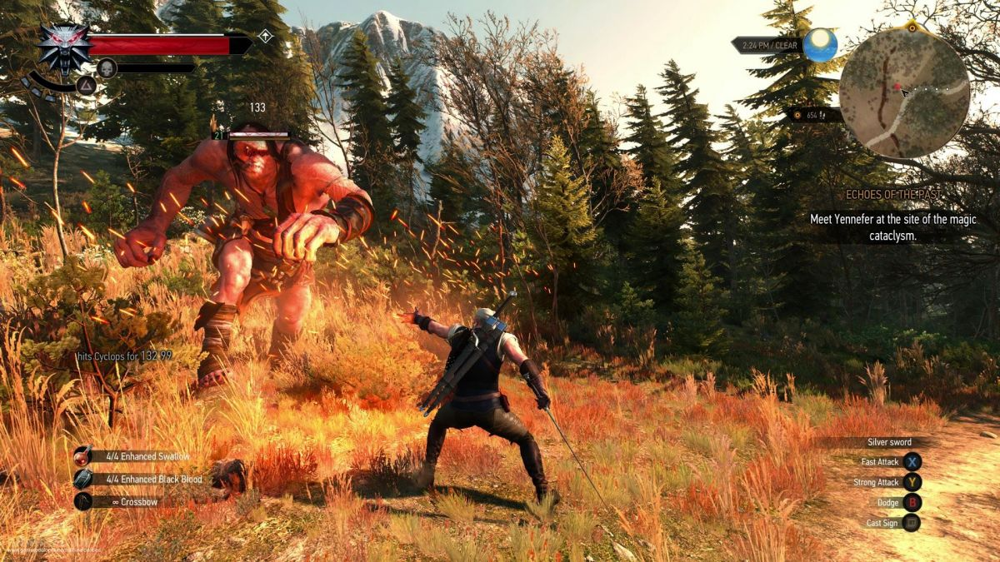
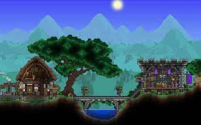

Estos se separan a su vez en dos
categorías, juegos que te dan
libertad a la hora de seguir la historia
y juegos que te
obligan a seguir con la historia para explorar su mundo.
-
Libertad: En estos el jugador es libre
a la hora de escoger que hace sin restricciones de zonas impidiendote
pasar y sin problemas de niveles donde mueres de un golpe, la intencion
de estos juegos es que
el jugador se sumerja en su mundo
y que disfrute de este,un ejemplo de este tipo de juegos es Zelda BOTW
del cual ya hable en el inicio, en este juego eres libre de hacer lo
que quieras haciendo que disfrutes
explorando su mundo.
-
Restrcciones: Estos juegos quieren que
te centres en su historia recordandote que esta tiene unos pasos que
seguir para poder seguir explorando ya sea prohibiendote estar en un
zona si no llegaste a cierta parte de la historia o poniendo enemigos
de alto nivel los cuales llegan a matarte rapidamente, un ejemplo de
este tipo de juego es The Witcher, en este juego se pueden ver ambos
tipos de restricciones haciendo que el juego sea un poco más aburrido.

Mundos abiertos sin historia
También conocidos como
sandbox, en estos juegos el jugador es el jugador el que se encarga de
descubrir
el mundo sin ningún tipo de ayuda a la hora de explorar,estos suelen
ser juegos de supervivencia donde has de conseguir recursos para
sobrevivir y no perecer de hambre o otro tipo de males que te puedan
afectar,también suelen tener un sistema de construcción con el cual
poder costruir edificios que te ayuden a mantenerte vivo y poder
construirte una casa.Los dos juegos más característicos de este tipo
son
Minecraft y
Terraria , en ambos puedes explorar un gran mundo , en un en 2D y en otro en 3D y son los juegos que más libertad te dan.
